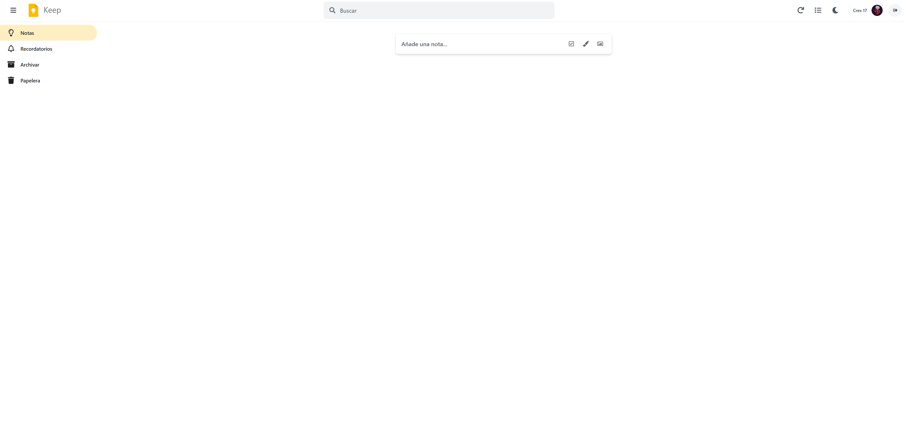
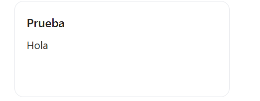
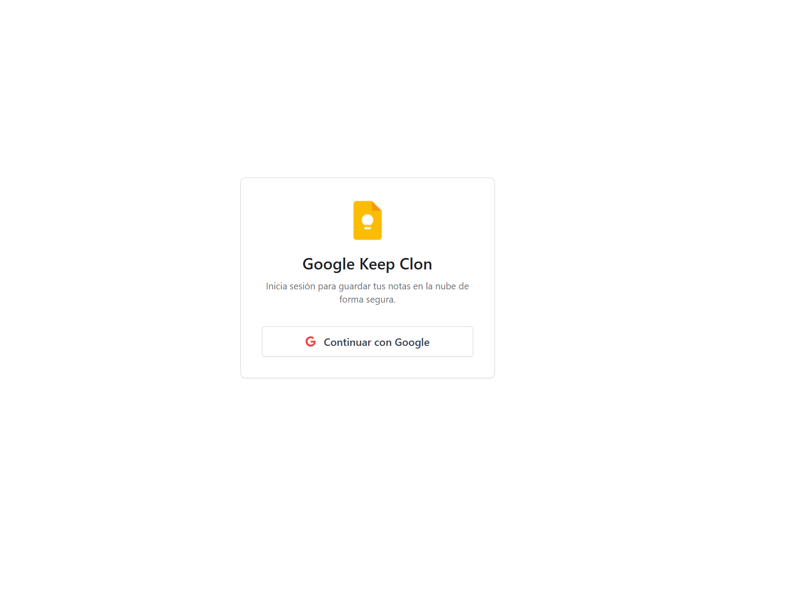

Parte 2 Historial de Prompts
Registro de los prompts usados para la generación de esta aplicacion y una foto de su desarrollo mediante estos.
Prompt 1: Estructura Base
Creación de la estructura base, usando el codigo html de la web original de navegador de Google Keep
Código del Prompt:
Actúa como experto en React y Tailwind CSS. Tengo un proyecto React creado con Vite. Quiero migrar un diseño HTML estático a componentes de React.
Analiza el código HTML que te pego al final.
Divide la interfaz en estos componentes: Sidebar, Header, CreateNoteInput, NoteCard, NoteList y Layout.
Dame el código de cada componente usando Tailwind CSS para los estilos.
En App.jsx, monta la estructura básica para que se vea igual que el HTML.
Usa react-icons o FontAwesome para los iconos.
(Añadir aquí codigo html) Resultado Visual:
Prompt 2: Conexion con la base de datos
Crear la base de datos en Supabase y conectarla a nuestro codigo
Código del Prompt:
He decidido usar Supabase como base de datos para alojar todo lo necesario para el programa.
Dime qué comando npm necesito para instalar el cliente de Supabase (@supabase/supabase-js).
Dame el código para configurar el cliente en src/supabase/client.js usando variables de entorno (VITE_SUPABASE_URL, etc.).
Diseño de la Base de Datos: Como Supabase usa SQL, dame el script SQL para crear la tabla notes en el editor de SQL de Supabase. La tabla debe tener:
id (uuid, primary key).
user_id (uuid, para saber de quién es la nota).
title (text).
content (text, para notas simples).
type (text: 'text', 'list', 'image', 'drawing').
is_pinned (boolean).
color (text).
list_items (jsonb, para guardar los items del checklist si es una lista).
created_at (timestamp).
Crea un Custom Hook useNotes que tenga funciones para leer las notas (SELECT), insertar (INSERT), actualizar (UPDATE) y borrar (DELETE).Resultado Visual:

Prompt 3: Aumentar las funcionalidades de la aplicación y conectarlo con la base de datos real
Pedimos que las notas se creen y la base de datos las guarda, ademas añadimos funcionalidades que tiene la aplicación original, como el modo oscuro o ver en listas.
Código del Prompt:
Pasemos con la siguiente fase del proyecto:
Vamos a conectar la lógica con la vista.
Modifica el componente CreateNoteInput. Haz que sea un formulario controlado (useState) y que al pulsar 'Cerrar' o hacer click fuera, llame a la función addNote de mi hook de Firebase.
Modifica NoteCard. Haz que los botones de 'Papelera' y 'Fijar' llamen a deleteNote y togglePin respectivamente.
Implementa la separación visual: En NoteList, filtra las notas para renderizar primero un bloque con las 'Fijadas' y luego otro con las 'Otras', igual que en el HTML original."
Añade las siguientes funcionalidades:
Para las notas:
Añade la capacidad de que las notas tengan recordatorios, etiquetas que creas y le das a las notas, la capacidad de ser archivadas, una zona donde se quedan las notas eliminadas antes de ser eliminadas del todo, la capacidad de poner colores a las notas e imagenes de fondo
Para la pagina:
Añade la capacidad de que se vean las notas en lista o en cuadricula, añade la capacidad de extender y plegar el menu principal, que el boton de buscar busque por recordatorios y etiquetas, añade un boton donde habilitar y deshabilitar el modo oscuro () y un boton de actualizar la pagina por si no se muestra nada.
Resultado Visual:
Prompt 4: Usar Auth de Google
Conectamos nuestra app con el servicio de autentificación de Google, permitiendo al usuario logearse.
Código del Prompt:
Vamos a configurar la seguridad y el login.
Crea un componente Login que use el método supabase.auth.signInWithOAuth({ provider: 'google' }).
Por ultimo, crea un AuthProvider (Contexto) para detectar la sesión del usuario (onAuthStateChange).
IMPORTANTE (Seguridad): Explícame cómo activar las políticas RLS (Row Level Security) en mi tabla notes desde el panel de Supabase. Dame el código SQL de la política para que:
Los usuarios solo puedan hacer SELECT (ver) sus propias filas (auth.uid() = user_id).
Los usuarios solo puedan hacer INSERT/UPDATE/DELETE en sus propias filas.
Actualiza el hook useNotes para que incluya automáticamente el user_id al crear una nota nueva."Resultado Visual:
Prompt 5: Boton de desloguearse
Añadimos la opcion de desloguearse de la aplicación y añadimos el nombre y foto del usuario
Código del Prompt:
Vamos a hacer un ultimo cambio y añadir la capacidad de desloguearte de la app, añadelo a arriba a la derecha de la barra de navegacion.